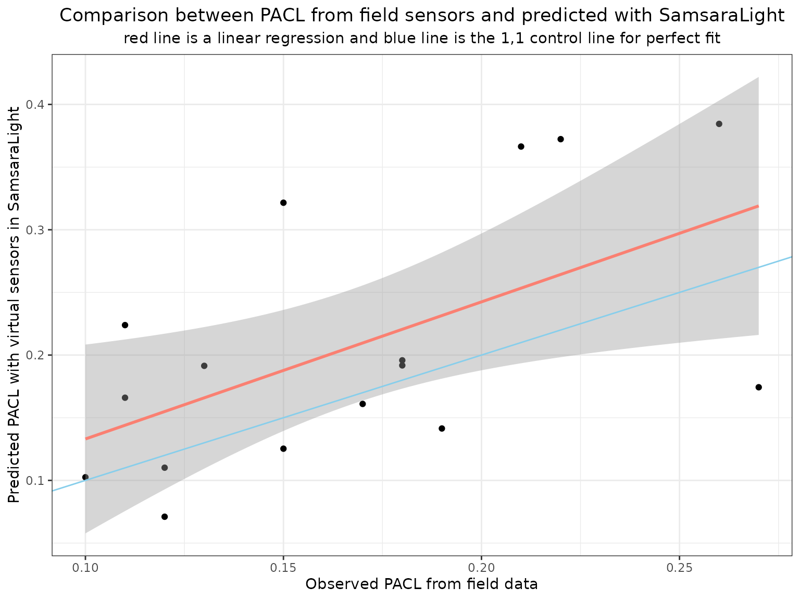

7 - Add light sensors
Estimate light arriving toward virtual light sensors
7-light_sensors.RmdIn this tutorial, we will use another real inventory called cloture20
(stored in the package and retrieved using
SamsaRaLight::data_cloture20), that comes from a project to
identify the effect of putting fences around the plot to avoid
herbivory. The inventory has been done following a specific protocol
with different concentric surveys, allowing us to consider more complex
inventory zone shapes. Moreover, relative light on the grounds has been
estimated on the field using hemispherical photographs. This will
exemplify how to estimate the relative light arriving to virtual sensors
using the SamsaRaLight package. Finally, to illustrate the
interest of virtual sensor, we will conduct a small experiment to
calibrate a mean leaf area density on the plot.
# Set seed for randomization reproducibility
set.seed(5030)Observe the inventory zone
ggplot() +
# Plot the inventory zone
geom_polygon(data = SamsaRaLight::data_cloture20$core_polygon,
mapping = aes(x = x, y = y),
inherit.aes = FALSE,
fill = "yellow", color = "black", alpha = 0.7) +
# Trees with irregular crown shapes
geom_ellipse(data = SamsaRaLight::data_cloture20$trees,
mapping = aes(x0 = x,
y0 = y,
a = (re_m + rw_m) / 2,
b = (rn_m + rs_m) / 2,
angle = 0,
fill = species)) +
coord_equal() +
theme_bw()Create the virtual stand
sl_stand <- create_rect_stand(
trees = SamsaRaLight::data_cloture20$trees,
cell_size = 5,
core_polygon_df = SamsaRaLight::data_cloture20$core_polygon,
fill_around = TRUE
)Prepare the virtual stand with sensors
Sensors dataset format
Mandatory varables are id_sensor unique integer, the sensor coordinates (x, y) in the virtual stand and the height of the sensor h_m in meters. Here we have the output pacl of the sensors, but the SamsaraLight model do not use it. We will use them in order to compare with the estimated PACL from the SamsaraLight model.
SamsaRaLight::data_cloture20$sensors
#> id_sensor x y h_m pacl pacl_direct pacl_diffuse
#> 1 1 22.00 56.64 2 0.11 0.13 0.10
#> 2 2 71.22 53.45 3 0.22 0.28 0.16
#> 3 3 75.30 53.45 3 0.26 0.31 0.21
#> 4 4 71.22 45.27 3 0.15 0.13 0.16
#> 5 5 71.22 37.21 3 0.13 0.08 0.17
#> 6 6 56.88 37.21 3 0.18 0.12 0.22
#> 7 7 68.11 24.30 2 0.27 0.29 0.24
#> 8 8 57.84 22.00 3 0.18 0.21 0.15
#> 9 9 57.84 26.11 3 0.10 0.12 0.09
#> 10 10 67.34 53.45 3 0.21 0.26 0.17
#> 11 11 22.00 64.82 3 0.17 0.20 0.15
#> 12 12 25.97 64.82 3 0.19 0.24 0.15
#> 13 13 25.97 68.74 3 0.12 0.09 0.14
#> 14 14 28.08 74.86 3 0.11 0.03 0.18
#> 15 15 32.00 68.74 3 0.12 0.07 0.17
#> 16 16 28.08 64.82 3 0.15 0.18 0.13IMPORTANT: shift the sensors coordinates
However, we have used the function create_rect_stand()
that shifted the coordinates of the inventory to include it inside a
rectangle virtual stand. Thus, do not forget to also apply the shift to
the sensors coordinates.
data_sensors <- SamsaRaLight::data_cloture20$sensors %>%
dplyr::mutate(x = x + sl_stand$info$shift_x,
y = y + sl_stand$info$shift_y)Observe sensors within the virtual stand
For the sake of the representation, we draw the sensor as a large square.
ggplot() +
# Plot the inventory zone
geom_polygon(data = sl_stand$inv_zone_df,
mapping = aes(x = x, y = y),
inherit.aes = FALSE,
fill = "yellow", color = "black", alpha = 0.7) +
# Trees with irregular crown shapes
geom_ellipse(data = sl_stand$trees,
mapping = aes(x0 = x,
y0 = y,
a = (re_m + rw_m) / 2,
b = (rn_m + rs_m) / 2,
angle = 0,
fill = species)) +
coord_equal() +
theme_bw() +
# Add the sensors
geom_rect(data = data_sensors,
mapping = aes(xmin = x - 2,
ymin = y - 2,
xmax = x + 2,
ymax = y + 2),
color = "black", fill = "gray", alpha = 0.7) +
geom_text(data = data_sensors,
mapping = aes(x = x, y = y, label = id_sensor),
size = 3)Estimate light arriving to the sensors
Run SamsaraLight
To inform the SamsaraLight model on the sensors we want to compute
light interception, we have to provide our sensor data.frame with the
sensors argument. In addition, we can decide to compute
light interception ONLY on the sensors, and not on trees and cells
(setting sensors_only = TRUE), which greatly reduces the
computation time as rays are casted only towards the sensors, and not
toward the center of each cell.
sl_out_sensors <- SamsaRaLight::sl_run(
# Trees
trees = sl_stand$trees,
# Sensors
sensors = data_sensors,
sensors_only = FALSE,
# Radiations
monthly_rad = SamsaRaLight::data_cloture20$radiations,
latitude = SamsaRaLight::data_cloture20$info[["latitude"]],
# Stand geometry
slope = SamsaRaLight::data_cloture20$info[["slope"]],
aspect = SamsaRaLight::data_cloture20$info[["aspect"]],
north_to_x_cw = SamsaRaLight::data_cloture20$info[["north_to_x_cw"]],
cell_size = sl_stand$info$cell_size,
n_cells_x = sl_stand$info$n_cells_x,
n_cells_y = sl_stand$info$n_cells_y,
# Consider a turbid medium as the transmission model (default is TRUE)
turbid_medium = TRUE,
# Use a torus system for representing plot edges (default to TRUE)
use_torus = TRUE,
# Consider trunk interception (default is TRUE)
trunk_interception = TRUE
)Observe sensors on the light map
plot_sl_output(sl_out_sensors,
trees.fill = NULL,
cells.fill = "pacl",
cells.fill.palette = "light01",
sensors.plot = TRUE)Compare observed with estimated PACL
The estimated light arriving to the sensors is stored in the
$output$sensors object, and the format is the same as for
the cells output. The difference is that cells nergy is estimated on the
slope, whereas sensor output energy is computed as arriving on a
horizontal plane.
We can compare the estimated PACL with the measured one on the field:
dplyr::left_join(
data_sensors %>%
dplyr::select(id_sensor, pacl) %>%
dplyr::rename_at(vars(-"id_sensor"), ~paste0(., "_obs")),
sl_out_sensors$output$sensors %>%
dplyr::select(id_sensor, pacl) %>%
dplyr::rename_at(vars(-"id_sensor"), ~paste0(., "_pred")),
by = "id_sensor"
) %>%
dplyr::mutate(
diff_pacl = pacl_obs - pacl_pred
) %>%
ggplot(aes(y = pacl_pred, x = pacl_obs)) +
geom_point() +
geom_smooth(method = "lm", formula = y ~ x, color = "salmon") +
geom_abline(intercept = 0, slope = 1, color = "skyblue") +
xlab("Observed PACL from field data") +
ylab("Predicted PACL with virtual sensors in SamsaraLight") +
labs(title = "Comparison between PACL from field sensors and predicted with SamsaraLight",
subtitle = "red line is a linear regression and blue line is the 1,1 control line for perfect fit") +
theme_bw() +
theme(plot.title = element_text(hjust = 0.5),
plot.subtitle = element_text(hjust = 0.5))
A first approach for LAD calibration
Above, the LAD parameter has been set to 0.5. Field sensors can be used to calibrate the tree leaf area density, an important parameter that controls the amount of light arriving on the ground.
To do so, a first approach could be to found a mean species’ LAD value that minimize the mean residuals between observed and predicted total PACL.
Run SamsaraLight with different LADs
LADs <- seq(0.001, 2, by = 0.001)
out_residuals <- vector("list", length(LADs))
i <- 0
time_start <- Sys.time()
for (lad in LADs) {
print(lad)
i <- i+1
# Set the tested LAD value
inv_test <- sl_stand$trees %>%
dplyr::mutate(crown_lad = lad)
# Run SamsaraLight
sl_out_sensors_test <- SamsaRaLight::sl_run(
# Trees
trees = inv_test,
# Sensors
sensors = data_sensors,
sensors_only = TRUE,
# Radiations
monthly_rad = SamsaRaLight::data_cloture20$radiations,
latitude = SamsaRaLight::data_cloture20$info[["latitude"]],
# Stand geometry
slope = SamsaRaLight::data_cloture20$info[["slope"]],
aspect = SamsaRaLight::data_cloture20$info[["aspect"]],
north_to_x_cw = SamsaRaLight::data_cloture20$info[["north_to_x_cw"]],
cell_size = sl_stand$info$cell_size,
n_cells_x = sl_stand$info$n_cells_x,
n_cells_y = sl_stand$info$n_cells_y,
# Consider a turbid medium as the transmission model (default is TRUE)
turbid_medium = TRUE,
# Use a torus system for representing plot edges (default to TRUE)
use_torus = TRUE,
# Consider trunk interception (default is TRUE)
trunk_interception = TRUE
)
# Compute the mean residuals
out_residuals[[i]] <-
dplyr::left_join(
data_sensors %>%
dplyr::select(id_sensor, pacl) %>%
dplyr::rename_at(vars(-"id_sensor"), ~paste0(., "_obs")),
sl_out_sensors_test$output$sensors %>%
dplyr::select(id_sensor, pacl) %>%
dplyr::rename_at(vars(-"id_sensor"), ~paste0(., "_pred")),
by = "id_sensor"
) %>%
dplyr::mutate(
res = pacl_obs - pacl_pred
) %>%
dplyr::summarise(res = mean(res)) %>%
dplyr::mutate(lad = lad, .before = res)
}
time_end <- Sys.time()
time_elapsed <- time_end - time_start
out_residuals <- dplyr::bind_rows(out_residuals)Find the optimised LAD
best_lad <- out_residuals$lad[which.min(abs(out_residuals$res))]
text_best_lad <- textGrob(as.character(best_lad),
gp=gpar(fontsize=13, fontface="bold",
col = "salmon")) The optimized mean LAD appeared to be 0.776, which indicates that the default value of 0.5 was relevant.
ggplot(out_residuals, aes(y = res, x = lad)) +
geom_point() +
geom_hline(yintercept = 0, color = "darkgray") +
geom_vline(xintercept = best_lad, color = "salmon") +
annotation_custom(text_best_lad,
xmin=best_lad, xmax=best_lad,
ymin=-0.97, ymax=-0.85) +
coord_cartesian(clip = "off") +
theme_bw() +
ylab("Residuals between observed and predicted PACL") +
xlab("Leaf area density LAD")